其他作品与手绘Other Works
项目说明按旧站英文原文保留；时间与个人介绍反映当时的作品集记录。Original portfolio text is preserved in English. Dates and biographical information reflect the archived portfolio; see the academic homepage for current information.
Interior Sketch
The sketches are in A1 including effect drawing, plan, vertical section and cross section.

Community Centre Design
Café Design
Landscape Design in Public Park
Museum Exhibition Design
Hand Drawing
Yang is very interested in painting and here are some of her works. She is used to recording her daily life as well some ideas by drawing.
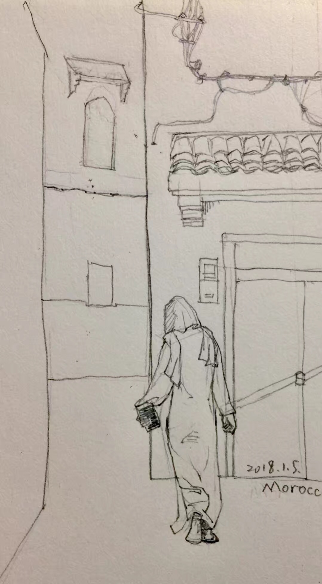
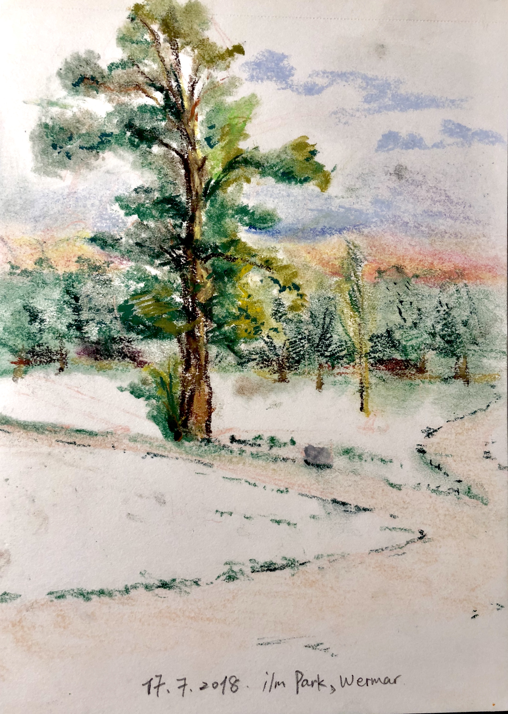
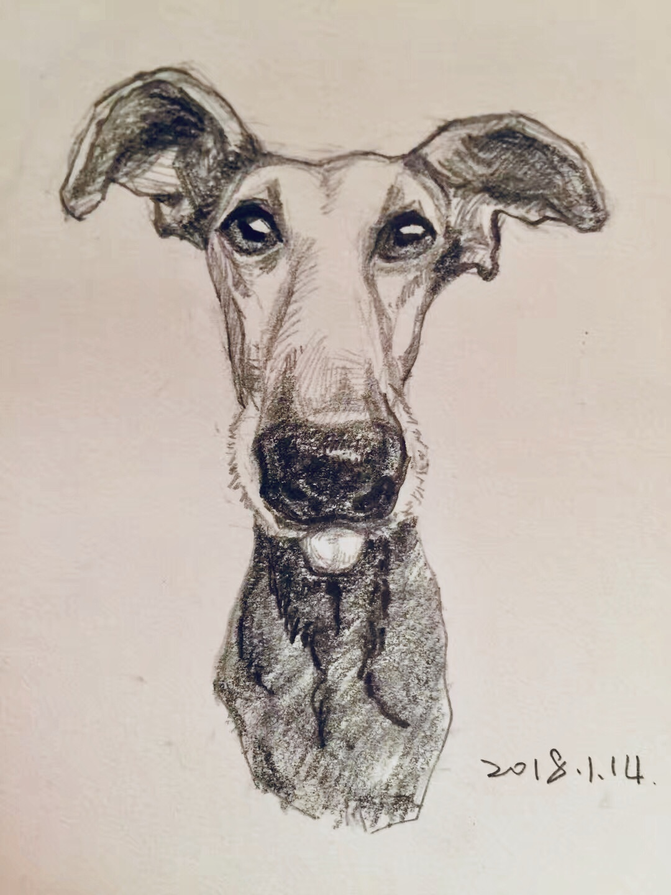
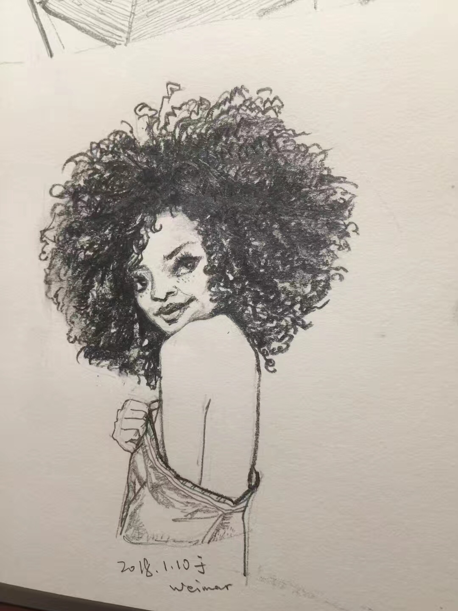
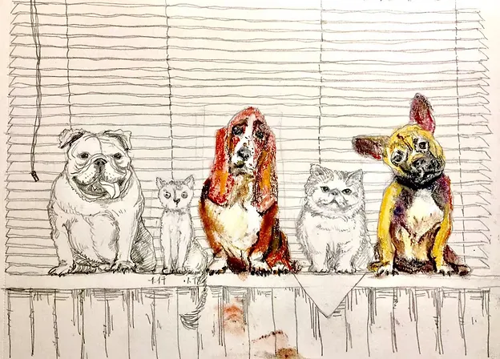
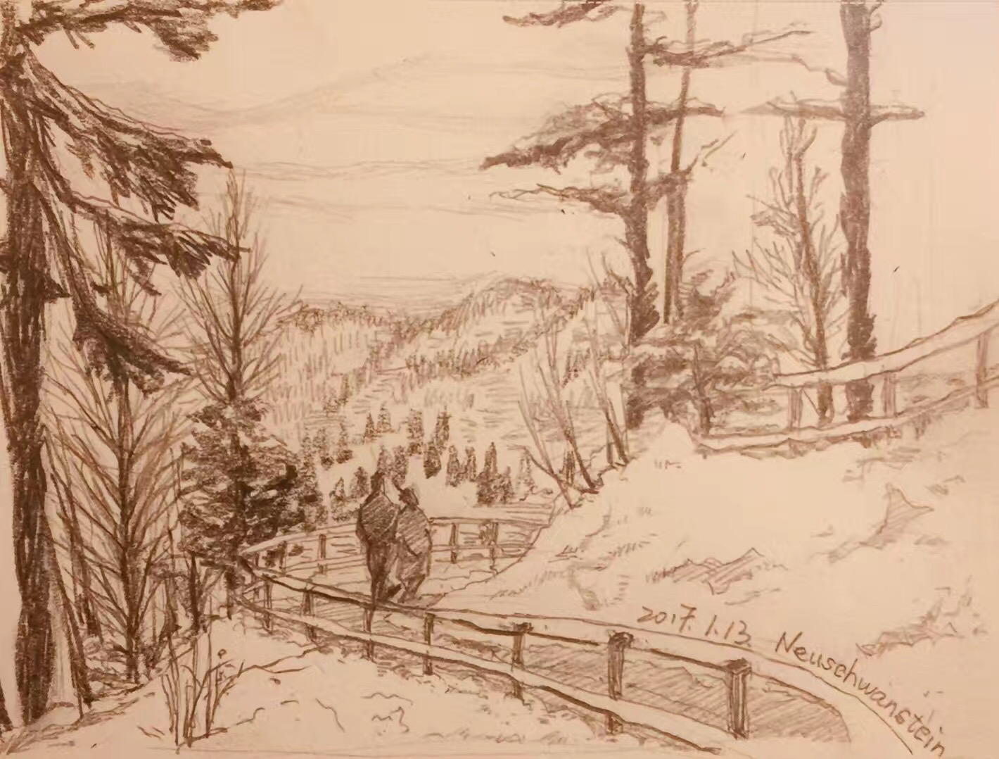
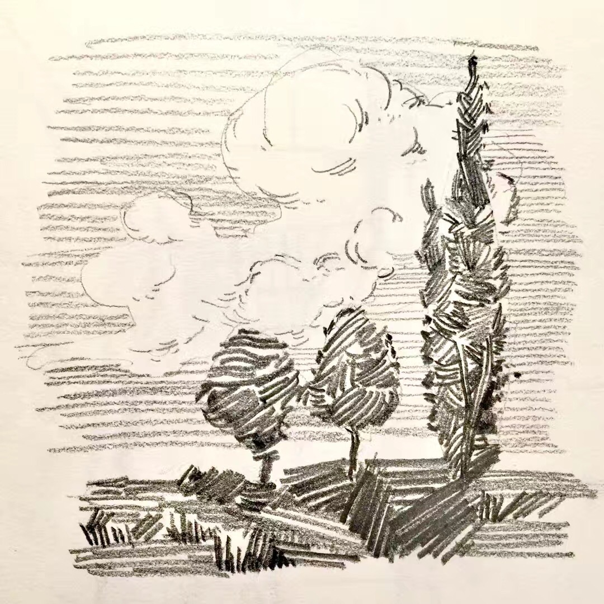
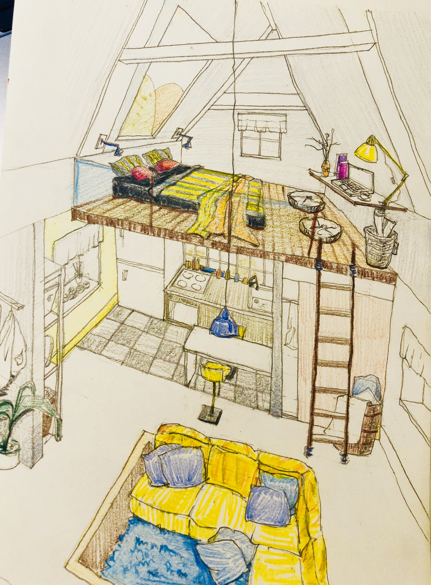
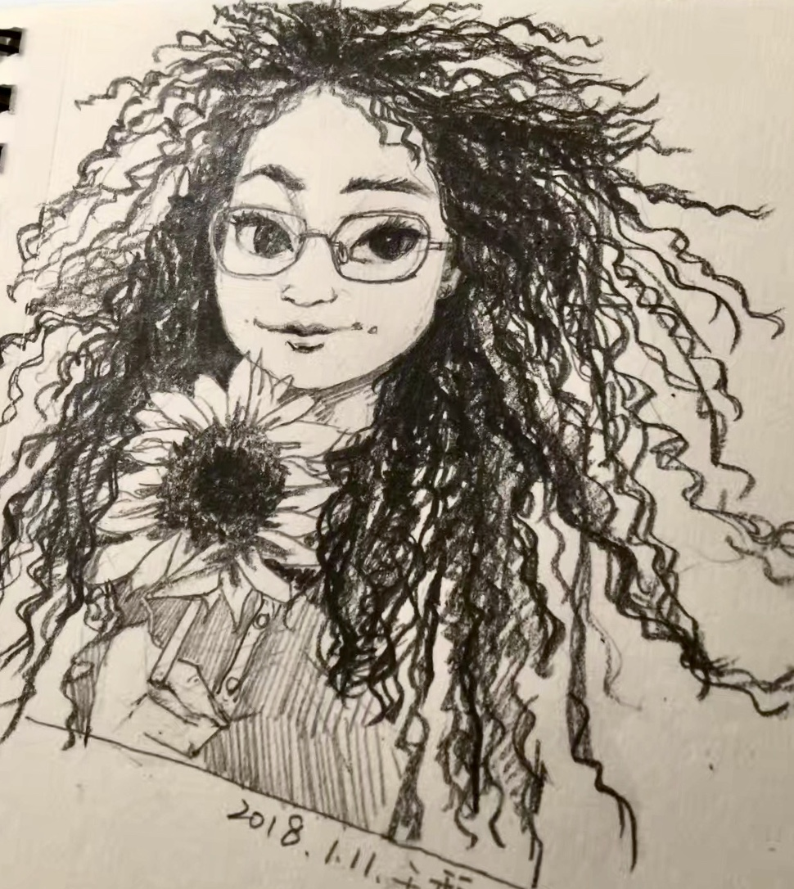
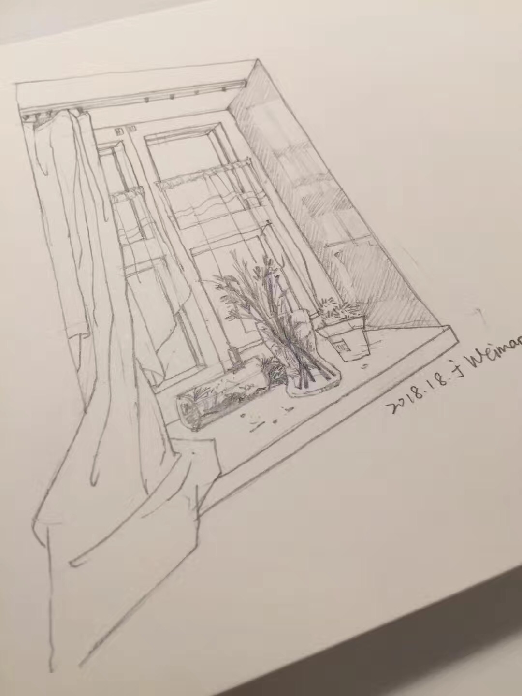
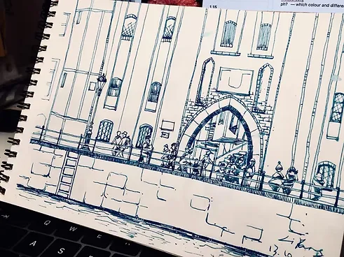
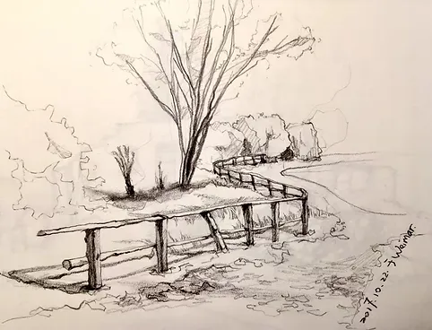